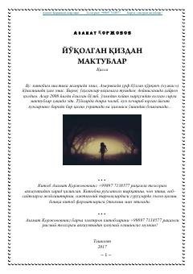

YQSirli qizdan kelgan maktublar yigit hayotini butunlay o'zgartiradi.
Bu qissa to'ylarda doira chalib kun kechiruvchi yigit Elmir hayotini tasvirlaydi. Bir kuni u sirli bir qizni uchratadi va shu voqeadan so'ng o'limdan keyin marhum qizdan kelgan sirli maktublar uning hayotini o'zgartiradi. Asar 2008 yilda yozilgan bo'lib, mistika va psixologik taranglik elementlarini o'z ichiga oladi.